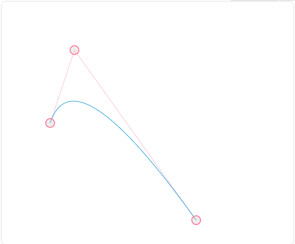
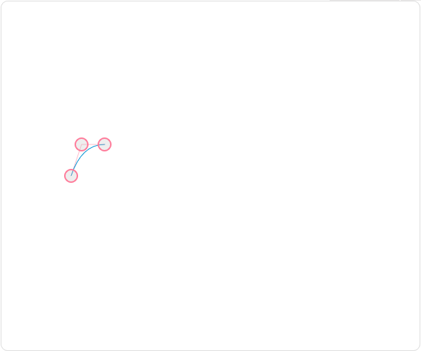
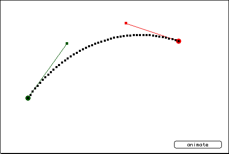

ttf中分割贝塞尔曲线(自己想的,不采用递归方式)
针对存在水平切线(切点为X)的p1~p2~p3的贝塞尔曲线,我们从X分割成两个贝塞尔曲线
P2
*
# on curve
* off curve
__-X--_
_-- -_
P1 _- - A non-y-monotonic Bézier arc.
# \
- Here we have
\ P2.y >= P1.y &&
\ P3 P2.y >= P3.y (!)
#
三个顶点坐标: p1 (x1,y1) p2 (x2,y2) p3 (x3,y3)
bezier曲线方程如下: B(t) = (1-t)2 * p1 + 2t(1-t) * p2 + t2 * p3 针对t,求导: B'(t) = -2(1-t) * p1 + 2*((1-t) - t)*p2 + 2t * p3 B'(t) = 2(t-1) * p1 + 2(1-2t)*p2 + 2t * p3
令B'(t) = 0,就是曲线的水平或竖直切线:
0 = 2t*p1 - 2*p1 - 4t*p2 + 2*p2 + 2t * p3 0 = t*(2*p1 - 4*p2 + 2*p3) - 2*p1 + 2*p2 (2*p1 - 2*p2) t = -———— 2*(p1-2*p2+p3) p1 - p2 t = -——— p1-2*p2+p3
针对水平切线,需要使用p1,p2,p3的y坐标值代入(垂直使用x坐标代入), 求得ty = (p1.y - p2.y)/(p1.y - 2*p2.y + p3.y);
然后根据B(t)公式求出切点X的x,y坐标: Xx = (1-ty)2 * p1.x + 2ty(1-ty) * p2.x + ty2 * p3.x (1) Xy = (1-ty)2 * p1.y + 2ty(1-ty) * p2.y + ty2 * p3.y (2)
*接下来需要求p1~x,和x~p3这两段的贝塞尔方程(的控制点) c *
P2
*
c
__-X--_
_-- -_
P1 _- -
# \
-
\
\ P3
#
其实我们需要理解的bezier曲线的原理:控制点和起始点的连线和他们形成的曲线都是相切的. 所以 p1-c 平行于 p1-p2,而c-x是水平的,所以c在p1-p2和过x的水平切线的交点上.
直线p1-p2: L(t) = p1 + (p2-p1)*t ,t∈[0,1] 而过X的水平切线时,t=(Xy-p1.y)/(p2.y-p1.y); 所以c = p1 + (p2-p1)*(Xy-p1.y)/(p2.y-p1.y);
cx = p1.x + (p2.x - p1.x) * (Xy - p1.y)/(p2.y-p1.y); (3) 而因为是水平直线,所以: cy = Xy,不用再计算 (4) 而Xx和Xy已经由上面(1) (2)的公式计算出来了
所以cx,cy 可以求出来了. 另一端的弧同理也可以求出.
下面给出lua代码::
--切线是水平方向: local p1 = {x=100,y=250}; local p2 = {x=250,y=100}; local p3 = {x=400,y=450}; --水平方向切线使用 t_y 进行计算 local t_x = (p1.x - p2.x)/(p1.x - 2*p2.x + p3.x); local t_y = (p1.y - p2.y)/(p1.y - 2*p2.y + p3.y); --print('水平或竖直切线处的t_x,t_y',t_x,',',t_y); local X_x = (1-t_y)^2 *p1.x + 2*t_y*(1-t_y)*p2.x + t_y^2 * p3.x; local X_y = (1-t_y)^2 *p1.y + 2*t_y*(1-t_y)*p2.y + t_y^2 * p3.y; print(X_x,', ',X_y); c_x = p1.x + (p2.x - p1.x) * (X_y - p1.y)/(p2.y-p1.y); c_y = X_y; print('c_x:',c_x,' c_y:',c_y);


 绿色和红色是切线,两个的连接点就是控制点.